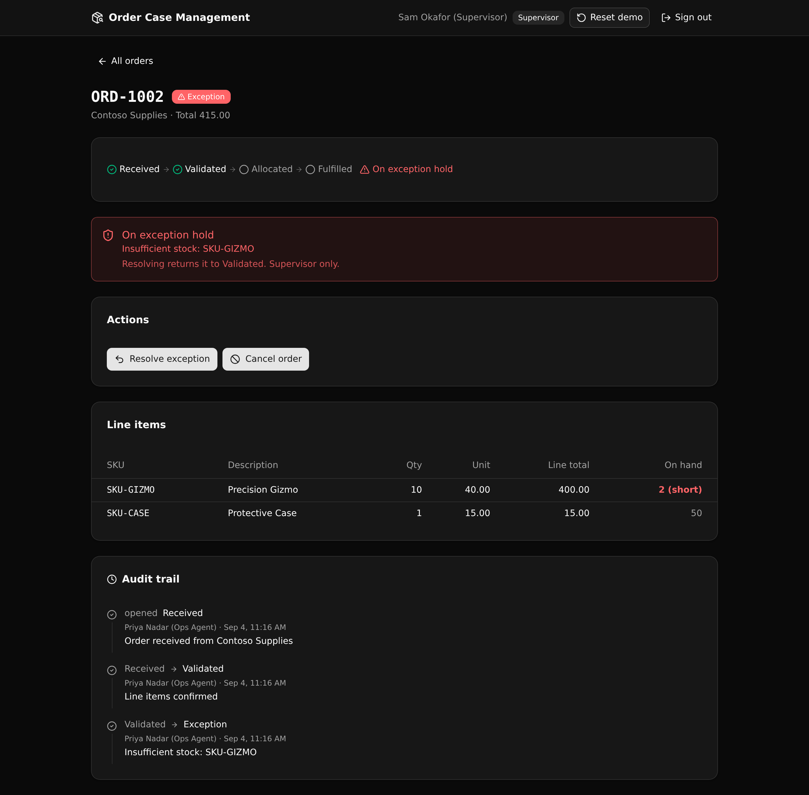

Every order is a case that moves through an enforced state machine. Role checks at the API layer decide who can advance or hold it, and every transition is written to an audit trail with the actor and the reason.

| Endpoint | What it enforces |
|---|---|
POST /api:auth/login | Mints a token. Same 401 on a bad email or a bad password. |
POST /api:orders/create | Ops or supervisor only. Requires a real customer. Totals the lines on the server. |
POST /api:orders/validate | received to validated. Needs at least one line item. |
POST /api:orders/allocate | validated to allocated. Reserves and decrements stock, or holds on exception. |
POST /api:orders/fulfill | allocated to fulfilled. |
POST /api:orders/exception | Puts an active order on exception hold with a reason. |
POST /api:orders/resolve | Supervisor only. Returns the order to its pre-exception state. |
POST /api:orders/cancel | Supervisor only. Cancels an open order. |
GET /api:orders/list | Any signed-in role. Orders, customers, and stock on hand. |
GET /api:orders/get/{order_id} | Any signed-in role. One order with lines, allocations, timeline, and stock. |
POST /api:seed/run | Public. Resets the demo data. |
One account per role, with a quick sign-in chip for each, so you can feel the role gates.
Status badges, customers, totals, and a stock-on-hand panel. Ops and supervisors can open a new order.
The state rail, role-gated actions, the exception banner with a Resolve action, line items against stock, and the audit trail.
The action buttons show for the current state. A lock marks one your role cannot run, and clicking it returns the real 403 from the API, so you can see the check is server-side, not on the screen.
Point your AI coding agent at this repo and adapt it to your domain:
Use the XanoTS template at
https://github.com/xano-scratch/order-case-management-backend
as the starting point for my backend. Clone it, run npm install, then
npx xanots login and npm run xano:deploy to get a live environment that
self-seeds. Then adapt the tables, endpoints, and roles to my domain.Or clone and deploy it yourself:
git clone https://github.com/xano-scratch/order-case-management-backend
cd order-case-management-backend
npm install
npx xanots login
npm run xano:deployThe links in the build notes point at a temporary environment that expires. The durable artifact is this repo. Anyone can re-deploy it with npm run xano:deploy for fresh links, and it self-seeds so the demo is browsable right away (sign in with ops@demo.test / demo1234).